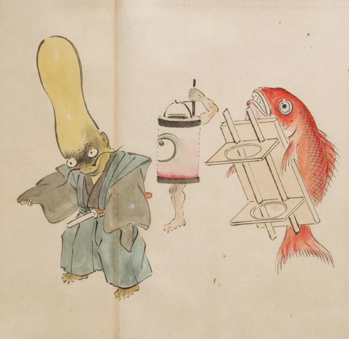

祝儀を運ぶ化物たちの先頭。羽織袴姿の化物を先頭に、提灯と鯛の化物が続いている。羽織袴の化物は、頭が瓢箪のように伸びており、鯰のようなひげを生やしている。提灯は一つ目で手足が1本ずつ生えており、吊具を自ら持ち支えている。鯛は自ら白木台に乗り進んでいる。
出典：親書誌：U426_nichibunken_0053：化物婚礼絵巻；バケモノコンレイエマキ／日付：2006／資源識別子：U426_nichibunken_0053_0006_0000
Copyright (c)2010- International Research Center for Japanese Studies, Kyoto, Japan. All rights reserved.